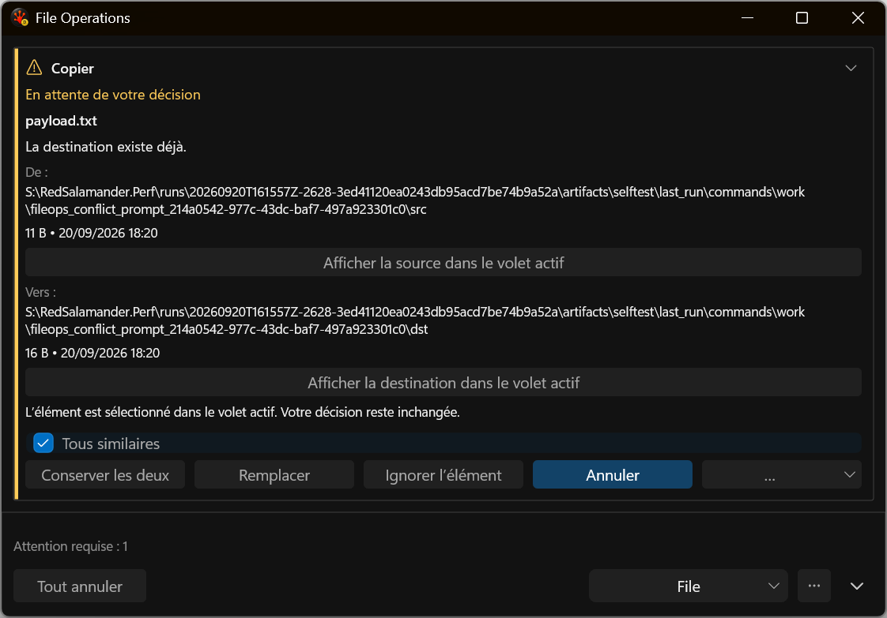
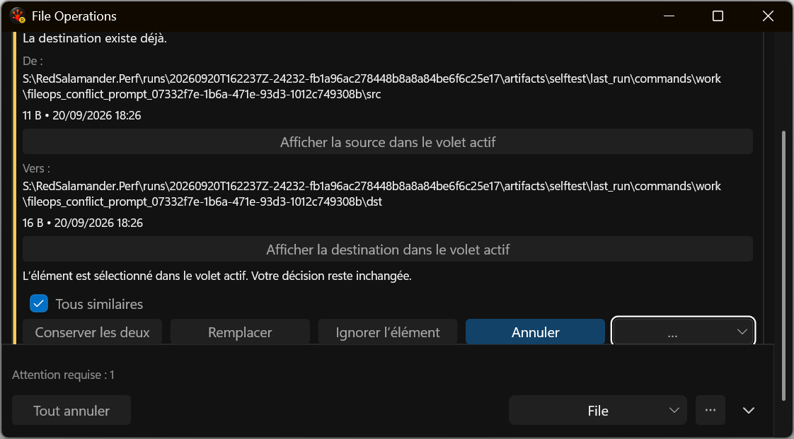
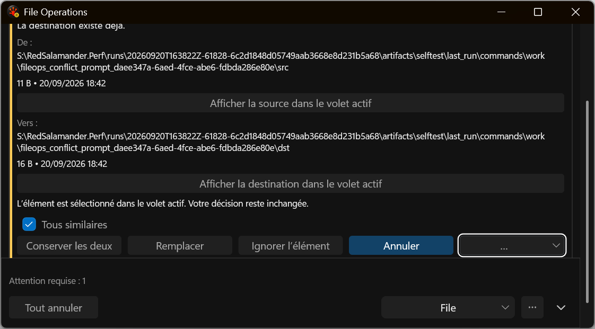

Body viewport and keyboard focus
Actual French application harness captures. Each rejected frame records a defect corrected in the accepted slice. See validation and remaining work.
Rejected: automatic resize defeated the short-window fixture

Rejected: focus chrome touched the footer clip

Accepted bounded slice: full focus ring above the footer
